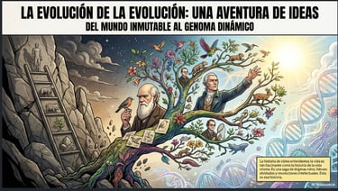
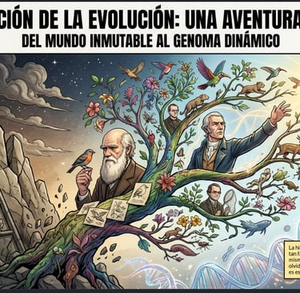
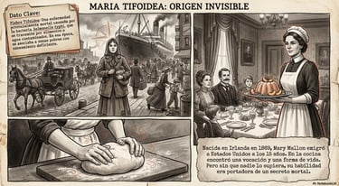
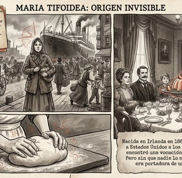

Recursos de Biología y Geología
Propuestas didácticas para trabajar la ciencia de la vida y de la Tierra desde la investigación, la observación y el pensamiento científico.
BREAKOUTS DIGITALES
Las piedras hablan (Ecosistemas): después de cientos de años orbitando en el espacio, al ser la Tierra un planeta inhóspito, habéis sido elegidos para la primera misión que descenderá al planeta para encontrar la biblioteca genómica que dejamos escondida en el Machu Picchu
Adecuado para 1º-4º de ESO
Pandemia (La célula): un peligroso dictador ha lanzado a la atmósfera un mortal virus que puede acabar con la humanidad en unas horas. Deberás encontrar el antídoto para salvar a la Humanidad
Adecuado para 4º ESO-1º Bachillerato
Niño desaparecido (Genética): conviértete en detective utilizando tus conocimientos de genética para identificar el caso de un niño que desapareció hace unos años en un hospital y que sus padres creen que fue robado
Adecuado para 4º ESO- 1º Bachillerato
Asesinato en el Transiberiano (Genética): colección de problemas de Genética Mendeliana que con su resolución conseguirás identificar al asesino (o igual no)
Para 4º ESO - 1º Bachillerato
Érase una vez ... La Tierra (Dinámica de la Tierra): el núcleo terrestre ha dejado de rotar y el campo magnético terrestre se está debilitando. Deberás aplicar tus conocimientos sobre las capas terrestres, datación relativa y absoluta, edades de la Tierra con los sucesos asociados para devolver ese movimiento de rotación al núcleo
Para 4º ESO
El misterioso caso del Dr Font 1ª parte (Salud y Enfermedad): el Dr Font és un famoso científico que está investigando una vacuna universal, pero ha desaparecido, y habéis sido elegidos para identificar a los culpables.
Para 3º ESO
Versión en Castellano (traducida por @Vicentxirivella)
El misterioso caso del Dr Font 2ª parte (Salud y enfermedad): en la primera parte llegamos al laboratorio del Dr Font. Nuestra misión es seguir encontrando pistas que nos puedan llevar a su paradero
Para 3º ESO
El misterioso caso del Dr Font 3ª parte (ADN): en la segunda parte conseguimos llamar a un teléfono , en esta tercera parte vamos a conseguir contactar con el Dr Font y encontrar la vacuna universal
Para 3º-4º ESO
Nuevo Mundo (Repaso de La Célula, Ecosistemas y Salud y Enfermedad): formas partes de una expedición cuya misión es la de viajar hasta el planeta Darwin para conseguir el remedio de una enfermedad que está causando estragos en nuestro planeta
Consulta de cardiología (Enfermedades del corazón): conviértete en un cardiólogo/a analizando los casos de varios pacientes que han llegado a tu consulta
Adecuado para 1º Bachillerato (Anatomía)
Otros Breakouts:
Estos dos pertenecen a Fátimo Miró, más conocida como la RubisCo, seguro que la conoces si eres profe de ByG y si no la conoces ya tardas en hacerlo
- Exploradores de especies (1º ESO)
- Los códigos de Svalbard (4º ESO)
Marta Velazquez: es otra de las profes cuyo trabajo me encanta. Podría poner varias actividades (puedes encontrarlas en su web) pero no puedo dejar de destacar
- Cartas a Charles Darwin: un completo breakout sobre Evolución
Antonio J Díaz: otra buena propuesta para aprender divirténdote
Pruebas escritas con narrativa
La célula : orgánulos celulares, mitosis, meiosis, ADN (duplicación, transcripción y traducción)
La historia de Golgi (22/23)
ADN (4º ESO): cariotipo, duplicación, transcripción y traducción del ADN. Autor Iñaki Fernández (@eneko_fc)
Para 3º de ESO
Inspector Speedle te pone a prueba (22/23)
Demuestra lo que sabes (23/24)
Genética: Leyes de Mendel, Herencia ligada al sexo, Alelismo múltiple, Codominancia
Viaje a la estación espacial de Biotecnología espacial (23/24)
Conocemos a Mendel (curso 20/21)
Érase una vez la Tierra (20/21)
Conocemos a George Cuvier (21/22)
La célula (3º ESO): orgánulos celulares, niveles de organización de la materia, notación científica, microscopio óptico y tipos de tejidos
Curso 20/21
Curso 21/22
Salud y enfermedad (3ª de ESO): enfermedades infecciosas y no infecciosas, medidas preventivas; vacunas, medicamentos. Comprensión lectora: prospecto médico
Curso 21/22
Aparato digestivo y respiratorio
Presos en la cárcel de Albocàsser (20/21)
Urgencias en el Hospital de La Plana (21/22)
Estación Orbital Alpha (23/24)
El cuerpo humano
Otras actividades
MÉTODO CIENTÍFICO
Diseñamos un experimento: esta actividad (del proyecto EDIA) sirve como introducción para presentar el método científico. Trabajo cooperativo y presentación (2 sesiones)
¿Existe el número GÓTICO": en esta actividad el alumnado descubre de manera vivencial en el patio, de dónde viene el número PI. Después aplicará el método científico para investigar si existe el número gótico, o número de gotas que caben en una determinada superficie y los factores que hay que tener en cuenta para ello
Breaking Lab: identifica el material que se utiliza en el laboratorio analizando una escena de la serie Breaking Bad.
Breakout APOCALIPSIS ZOMBIE: es un breakout NO DIGITAL que utilicé para repasar los temas de La Célula y Salud y Enfermedad. Altamente recomendable este tipo de experiencias. Si quieres sorprender... seguro lo consigues
¡El patio está lleno de fósiles!: utilizando una app de realidad aumentada en una primera sesión buscan los fósiles de una especie desconocida que hay en el patio. En una segunda sesión construyen el esqueleto y lo comparan con otros organismos (peces, anfibios, reptiles, aves y mamíferos) para emitir un informe.(Historia de la Tierra, Evolución)
Extracción del ADN de la calabaza: también lo hemos probado con fresas y con plátano. Esta práctica les encanta porque sorprende el resultado. Está en inglés(La célula, ADN)
Observaciones al Microscopio Óptico: colección de 4 prácticas de laboratorio que tienen en común la utilización del microscopio óptico. El alumnado suele encantarle ir al laboratorio para introducirse en el mundo microscópico(La célula)
SALUD Y ENFERMEDAD. SISTEMA INMUNOLÓGICO
El análisis de sangre: esta actividad está diseñada para trabajar en grupos cooperativos. Deberán identificar los componentes que aparecen en un análisis sanguíneo, sus funciones, sus valores normales, y los efectos o enfermedades que tienen su exceso y/o su defecto. Finalmente deberán, con los datos recogidos, realizar el diagnóstico a 6 sospechosos
Enfermedades (en valenciano) tomando como referencia la web http://www.xtec.cat/~ajimeno/cn3eso/naturals.htm
Un crucigrama sobre las enfermedades infecciosas , otro sobre las enfermedades no infecciosas y una sopa de letras con posterior clasificación de enfermedades no infecciosas
La gripe y el sistema inmunitario: colección de 4 vídeos con preguntas, realizado con EdPuzzle, en la que deberán responder a diferentes preguntas sobre cómo se produce la infección por el virus de la gripe y cómo reacciona nuestro sistema inmunológico
Parte 1 Parte 2 Parte 3 Parte 4
Posteriormente, el alumnado deberá realizar una línea del tiempo, en formato cómic, donde se representará el proceso de infección y respuesta del sistema inmunitario
Historia de la vacuna: vídeo de TedED "Cómo conquistamos el virus de la letal viruela" alojado en EdPuzzle y al que se le han añadido varias preguntas
También puede ser un adecuado sustituto o complemento la visualización del siguiente vídeo
Antibióticos: con el vídeo "Penicilina: descubrimiento y producción" alojado en EdPuzzle conoceremos qué son los antibióticos, cómo se descubrieron y cuál es su importancia, con varias preguntas para asegurar su visualización y entendimiento
Esta actividad se completa con la visualización del vídeo "¿Qué causa la resistencia a los antibióticos"
Análisis de los glóbulos blancos que tiene una muestra de sangre: actividad en el que el alumnado deberá, además de conocer los diferentes tipos de glóbulos blancos, realizar un recuento de los mismos, calcular su porcentaje en la muestra y finalmente tratar de identificar el problema de salud que puede tener el sospechos de un asesinato
Nuestro primer caso: en esta actividad llega a nuestro laboratorio una imagen de muestra de sangre al microscopio, con toda la información referente a los glóbulos blancos y sus tipos. Deberemos hacer un recuento de los mismos y realizar un diagnóstico de la muestra (en valenciano)
Estallido (película): con la visualización de esta película (puedo compartirla) del año 1995 y la posterior contestación a una serie de preguntas relacionadas con la transmisión de enfermedades, se consigue motivar, realizar debate y fomentarpensamiento crítico en muchos ámbitos de la naturaleza humana
Laboratorio Virtual de Inmunología: esta es una actividad original de HMMI Biointeractive. En este laboratorio virtual el alumnado diagnosticará enfermedades causadas por disfunciones del sistema inmune o por infecciones, utilizando el método ELISA
Instrucciones Hoja del alumno/a
Calendario de vacunaciones: esta actividad está diseñada para que cada grupo de alumnos/as busquen la información sobre las enfermedades para las que se les ha vacunado. En una segunda fase, realizarán una clasificación de estas enfermedades según el agente patógeno que las ha causado y finalmente realizarán una hoja de cálculo en el que diseñarçan un calendario de vacunaciones para un bebé que haya nacido en el día en el que se realiza la actividad.
Puede ser conveniente realizar una exposición oral en la que cada grupo sea el experto en un tipo de vacuna
Medicamentos (comprensión lectora): con esta actividad se debe leer un prospecto de un medicamento (Hemicraneal, que tanto me ha ayudado) y responder a varias preguntas relacionados con su uso
Test de sangre y transfusión: en esta actividad hecha con Genialy, el alumnado se convierte en el jefe de urgencias de un hospital, quien debe decidir el grupo sanguíneo de un herido y las bolsas de grupos sanguíneos compatibles que puede recibir, ¡y todo esto en un tiempo máximo de 15 minutos
Enfermedades infecciosas: juego realizado con Genialy en el que el alumnado tendrá 5 minutos para arrastrar y soltar al lugar adecuado las diferentes enfermedades según el agente patógeno que las origina
LA CÉLULA. ORGANIZACIÓN DE LA MATERIA. MICROSCOPIO ÓPTICO
Caza del Tesoro sobre la célula: en esta actividad el alumnado realiza una búsqueda de información completa en la web con el objetivo de buscar, comparar y finalmente contestar a diferentes cuestiones, muchas de las cuáles tienen diferente respuesta en la red, y que deberán contrastar para poder quedarse con la respuesta adecuada, como por ejemplo: ¿es el huevo una célula? (en valenciano)
La célula vs ????: se trata de una actividad de trabajo cooperativo en el que el alumnado debe compara cada uno de los orgánulos de la célula con otro sistema (una fábrica, una casa, un coche, una ciudad, el cuerpo humano, un barco...) Deberán justificar delante de sus compañer@s su elección, con una presentación en la que producirán imágenes con IA en la que comparen las estructuras que comparan
Partes del microscopio óptico: ficha interactiva de topworksheets en la que el alumnado deberá nombrar las diferentes partes del microscopio óptico (en valenciano)
Adivina qué soy: esta actividad la utilizo como inicio/motivación para la unidad dedicada a la Célula. En un vídeo aparecen 25 imágenes al microscopio electrónico y el alumno/a deberá identificar el máximo de imágenes. Las soluciones
Teoria Celular: vídeo de EdPuzzle con preguntas relacionadas con la Teoria Celular.
Test de microscopia : colección de preguntas en las que el alumnado deberá demostrar sus conocimientos sobre el microscopio óptico, así como su capacidad de relacionar el tamaño real con el observado en el propio microscopio
JeopardyLabs: actividad que se realiza por equipos, en la que aparecen preguntas de diferente dificultad y puntuación, y que es muy útil para repasar antes de la realización de la prueba escrita
CSI Flors: la célula como una fábrica. En esta actividad, realizada con TopWorksheets el alumnado deberá responder en primer lugar a varias cuestiones relacionadas con la célula y, posteriormente, relacionar cada uno de los orgánulos celulares con las distintas secciones de una fábrica
Quizizz CSI Flors La célula: cuestionario con el que se repasará todo lo visto en la Unidad Microbiología del Libro Digital "CSI Flors" (50 preguntas)
Una versión más divertida se puede encontrar en Blooket
Kahoot La célula: cuestionario con el que se repasará todo lo visto en la Unidad Microbiología del Libro Digital "La extraña historia de la célula" (48 preguntas). Se incluyen tambien varias preguntas sobre ADN, replicación, transcripción y traducción del ADN
Atrapa a ese virus: utilizando el juego del ratón y los gatos, se deberán resolver preguntas relacionadas con la Célula, Mitosis, Meiosis y los procesos de duplicación, transcripción y traducción del ADN
Más preguntas de este tema pero con un formato diferente lo puedes encontrar en "Boom la Extraña Historia de la Célula" que finaliza con un formulario que puedes personalizar (es reutilizable)
Actividades Educaplay orgánulos celulares y organización de la materia: actividad realizada con Educaplay en la que el alumnado deberá completar la ruleta de palabras con el contenido indicado. Puede imprimirse o realizarse online Pasapalabra Test
Relacionar columnas Crucigrama
CUERPO HUMANO
Uno/Cinquillo: juego de cartas para conocer los sistemas y órganos del cuerpo humano. Puede servir para jugar al UNO o al cinquillo (con sus mismas normas). Lo utilizo como motivación para la Primera Parte de la Unidad Didáctica Medicina Forense del libro digital CSI Flors
El juego de los cuadraditos: este juego ha sido creado por Fátima Miró (más conocida como La Rubisco -soy superfan de ella-) y es una experiencia de éxito como motivación o como repaso de los nutrientes de los alimentos
Gasto energético: esta actividad está diseñada para que el alumnado calcule aproximadamente, en una hoja de cálculo, la energía que consume en un día en función de las actividades que realiza. Podemos presentar esta actividad como una propuesta multinivel con diferentes objetivos dependiendo de la capacidad/motivación del alumnado
Què saps de l'aparell digestiu?: esta actividad esta realizada con Genialy y se van planteando preguntas relacionadas con el aparato digestivo con la plantilla del programa de televisión "Ahora Caigo"
Una cuestión de nutrientes: los clientes de una panadería se han quejado que los productos que allí se venden no son saludables y generan graves problemas de salud. Como aspirante al CSI Flors el alumando deberá investigar los casos que se han presentado y emitir un informe sobre las conclusiones obtenidas
Análisis de orina - Descubre al asesino: en esta completa actividad los alumnos se convierten en investigadores de un asesinato en el que deberán, en primer lugar, conocer los componentes de la orina, su función y sus valores normales (Características de un análisis de orina) así como también la Comparación entre la composición del plasma y de la orina. Una vez conocidas las características de un análisis de orina pasaremos a realizar la identificación del asesino atendiendo a las muestras de 5 analíticas (Descubre al asesino). Esta actividad es una versión traducida de la original que puedes encontrar en www.creative-chemisty.org.uk. En esta enlace tienes la versión en inglés. En el caso de no querer realizar esta práctica en el aula, podemos utilizar esta verisón reducida donde solo se trata de estudiar 3 analísis de orina
¿Dieta equilibrada?: el objetivo de esta actividad es que el alumnado en primer lugar sea capaz de calcular las calorías de una dieta propuesta para un día, creando y completando una hoja de cálculo. Posteriormente analizarán, y en su caso, modificarán la dieta para que sea saludable
Posibilidad de aplicar una propuesta multinivel para esta actividad
Dieta equilibrada: ésta actividad incluye 3 partes, conocer los nutrientes y la cantidad de cada uno de ellos en los alimentos, calcular el gasto energético diario y realizar una dieta equilibrada acorde al gasto energético realizado. En una hoja de cálculo vamos introduciendo los datos y podremos ir modificandolos de acuerdo a nuestras necesidades
La energia de los alimentos: con esta actividad se explica cómo se calcula la energía que tienen los alimentos y se plantean cuestiones. En una segunda parte realizará una búsqueda para reconocer la cantidad de cada una de las biomoléculas, y posteriormente aplicar la regla del 4-4-9 para comprobar que se cumple con una gran regularidad en cada uno de los alimentos
Quizizz sobre el aparato digestivo: colección de 25 preguntas para demostrar los conocimientos adquiridos por el alumnado en este tema (en valenciano)
Traducción, doblaje y montaje de videos Ted ED: en esta actividad multidisciplinar el alumnado deberá traducir, doblar y montar uno de los vídeos de TedED que hay en la carpeta. En un formato muy atractivo, he seleccionado más de 40 vídeos, en el que podremos comprobar, además de los conocimientos propios sobre el tema elegido, la competencia oral y digital de los estudiantes Acceso a la carpeta de los vídeos Rúbrica de evaluación
Sistema endocrino (Reto Megan Donner): en esta ocasión la inspectora Donner les propone a los aspirantes del CSI Flors 6 retos en los que deberán demostrar los conocimientos adquiridos del Sistema Endocrino, sus glándulas, las hormonas y sus relativas funciones en nuestro organismo
Rafa Nadal y el Aparato Locomotor: tomando como hilo conductor los 20 años de historia de éste fantástico tenista, he utilizado sus lesiones y otras las he inventado para que conozcamos mejor nuestros músculos y huesos. En el "Calentamiento" hay varias actividades, realizadas con Topworksheets, en las que se puede poner a prueba tus conocimientos
La sangre: vídeo-cuestionario realizado con EdPuzzle en el que se expone la composición de la sangre, así como las funciones de las diferentes células y componentes y dónde se intercalan preguntas relacionadas
Video-cuestionarios realizados con EdPuzzle sobre los diferentes aparatos y sistemas del cuerpo humano
Aparato digestivo Parte 1 Parte 2
Aparato respiratorio Parte 1 Parte 2
Sistema circulatorio Parte 1 Parte 2
Sistema endocrino Parte 1 Parte 2
Aparato Locomotor Parte 1 Parte 2
El juego de la nutrición: un tablero de juego con preguntas relacionadas con la nutrición y el aparato digestivo. Con sorpresas
Las articulaciones: (Repte Tripp 3) utilizando algunas lesiones que han tenido jugadores del Villarreal CF se identificarán, en primer lugar, los huesos, músculos y huesos en diferentes articulaciones del cuerpo humano. En segundo lugar deberán identificar el lugar de la lesión, hacer el dibujo nombrar los elementos implicados (en valenciano)
Una máquina perfecta: como fue mi primer recurso le tengo especial cariño. Se trata de un conjunto de actividades para reconocer órganos o funciones de éstos de todos los sistemas y aparatos del cuerpo humano. Cuenta con dos partes: una de práctica y otra de evaluación
Jeopardy L'aparell Digestiu: juego para realizar por equipos en el que hay preguntas sobre los órganos que componen el aparato digestivo, la digestión y las principales enfermedades del aparato digestivo (en Valenciano)
Vídeos de TedED colección de videos de TedEd que utilizo para que el alumnado desarrolle las competencias: lingüística, digital y científica. Traduciendo y doblando uno de los vídeos de TedED relacionados con los sistemas de cuerpo humano.
Algunos de estos vídeos y están doblados
LA HISTORIA DE LA TIERRA
Lizard Evolution Virtual Lab: gran recurso de HMMI Biointeractive en el que trataremos de descubrir en cuatro módulos por qué hay tantas especies de anolis en varias islas del Atlántico. Se trata de un Laboratorio Virtual (acceso a la carpeta con la traducción y algunos de los documentos)
Juego de cartas Timeline sobre la historia de la Tierra: se trata de un juego de cartas, realizado por @bioesoesfera (otra de las grandes que suelen compartir sus recursos) con el objetivo de ordenar cronológicamente los principales eventos que han ocurrido en la Historia de la Tierra
Radioactive dating game: con este juego de Phet se consigue entender el concepto de vida media para identificar las edades de fósiles u otros objetos a partir de la datación absoluta radioactiva
Cómics
Balmis: la expedición española que llevó la vacuna de la viruela a Europa y Asia
La historia de las vacunas
Desde la penicilina a la era post-antibiótica
La gripe:cómo actúa y cómo se defiende nuestro organismo
Charles Darwin, su viaje en el Beagle y su teoría de la Evolución
Gregor Mendel y la Genética
Santiago Ramón y Cajal
Los Orígenes de la Antisepsia


La evolución de la Teoría de la Evolución


Maria Tifoides
Conoce un poco más del Parkinson
Biología
Jeopardy sobre la célula, sus orgánulos, ciclo celular y los tejidos. Puedes elegir los grupos que juegan
Identifica qué animales son mamíferos, aves, reptiles, anfibios o peces, jugando
Juego de Memory para emparejar cada elemento con su nivel de organización de la materia correspondiente
Identifica los grupos sanguíneos que podrán salvar la vida de distintos pacientes de un hospital
Identifica los agentes infecciosos: virus, bacterias, hongos y protozoos, en el menor tiempo posible
En este juego deberás demostrar tu habilidad para pulsar sobre las enfermedades infecciosas
App que es capaz de identificar plantas, incluyendo una extensa ficha técnica para que conozcas al máximo sobre ella
Juego de Memory en el que el alumnado deberá emparejar los orgánulos celulares con sus funciones
Apps
Geología
Geólogo Digital: con esta app podrás identificar aquellos minerales o rocas que no conoces o tienes dudas en su identificación. Incluye su ficha técnica.
Simulador de datación radiométrica: con esta app tu alumnado identificará cuál es el elemento más adecuado para identificar la edad de cualquier objeto y finalmente podrá enviarte el informe de lo que ha hecho con un código QR
Unidad de sismología: de manera visual tu alumnado podrá saber cómo se identifica el epicentro de un terremoto.
Se ha centrado en la Comunidad Valenciana pero puedes modificarlo fácilmente al lugar que quieras
El ciclo de las rocas: ¿qué eres? y ¿en qué te puedes convertir? El ciclo de las rocas con imágenes